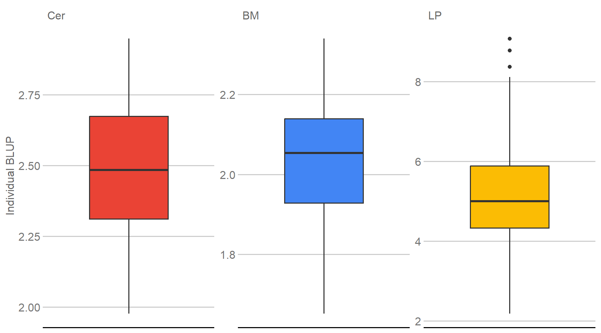

Real genomic data: preprocessing
Weverton Gomes da Costa
2026-11-24
Last updated: 2026-11-24
Checks: 7 0
Knit directory:
Genomic-Prediction-using-Regularized-Artificial-Neural-Networks/
This reproducible R Markdown analysis was created with workflowr (version 1.7.2). The Checks tab describes the reproducibility checks that were applied when the results were created. The Past versions tab lists the development history.
Great! Since the R Markdown file has been committed to the Git repository, you know the exact version of the code that produced these results.
Great job! The global environment was empty. Objects defined in the global environment can affect the analysis in your R Markdown file in unknown ways. For reproduciblity it’s best to always run the code in an empty environment.
The command set.seed(20260821) was run prior to running
the code in the R Markdown file. Setting a seed ensures that any results
that rely on randomness, e.g. subsampling or permutations, are
reproducible.
Great job! Recording the operating system, R version, and package versions is critical for reproducibility.
Nice! There were no cached chunks for this analysis, so you can be confident that you successfully produced the results during this run.
Great job! Using relative paths to the files within your workflowr project makes it easier to run your code on other machines.
Great! You are using Git for version control. Tracking code development and connecting the code version to the results is critical for reproducibility.
The results in this page were generated with repository version f81b199. See the Past versions tab to see a history of the changes made to the R Markdown and HTML files.
Note that you need to be careful to ensure that all relevant files for
the analysis have been committed to Git prior to generating the results
(you can use wflow_publish or
wflow_git_commit). workflowr only checks the R Markdown
file, but you know if there are other scripts or data files that it
depends on. Below is the status of the Git repository when the results
were generated:
Ignored files:
Ignored: .Rhistory
Ignored: .Rproj.user/
Ignored: .github/
Ignored: CONTRIBUTING.md
Ignored: data/dados_reais/geno_real.rds
Ignored: output/real/ann/figures/
Ignored: output/real/audit/figures/
Ignored: output/real/comparison/figures/
Ignored: output/real/gblup/figures/
Ignored: output/real/phenotype/figures/
Ignored: output/simulated/ann/figures/
Ignored: output/simulated/audit/figures/
Ignored: output/simulated/comparison/figures/
Ignored: output/simulated/gblup/figures/
Ignored: output/simulated/validation/figures/
Ignored: renv/library/
Ignored: renv/staging/
Note that any generated files, e.g. HTML, png, CSS, etc., are not included in this status report because it is ok for generated content to have uncommitted changes.
These are the previous versions of the repository in which changes were
made to the R Markdown (analysis/real_data_audit.Rmd) and
HTML (docs/real_data_audit.html) files. If you’ve
configured a remote Git repository (see ?wflow_git_remote),
click on the hyperlinks in the table below to view the files as they
were in that past version.
| File | Version | Author | Date | Message |
|---|---|---|---|---|
| Rmd | f81b199 | Weverton Gomes da Costa | 2026-11-24 | fix(r02): center BLUP boxplots within trait facets |
| Rmd | d7d39c4 | Weverton Gomes da Costa | 2026-11-24 | docs(r02): document common outputs and protect scientific exports during builds |
| Rmd | 2e5a47b | Weverton Gomes da Costa | 2026-11-24 | docs(r02): explain marker QC decisions and retained SNP panel |
| Rmd | 16b4cd1 | Weverton Gomes da Costa | 2026-11-24 | docs(r02): explain progeny structure, BLUP variation and SNP coding |
| Rmd | f5ec997 | Weverton Gomes da Costa | 2026-11-24 | docs(r02): illustrate genomic inputs and individual phenotype alignment |
| Rmd | b376b83 | Weverton Gomes da Costa | 2026-11-24 | docs(r02): standardize introductory tutorial and native kable tables |
| html | 07ec687 | WevertonGomesCosta | 2026-11-17 | docs(real): publish validated R02 preprocessing tables and MAF figure |
| Rmd | ad246db | WevertonGomesCosta | 2026-11-17 | docs(real): standardize R02 preprocessing tables and MAF figure |
| html | 574df97 | WevertonGomesCosta | 2026-11-17 | docs: rebuild real-data scientific pages for R01-R03 |
| Rmd | bf7cb02 | Weverton Gomes da Costa | 2026-11-17 | docs(real): clarify individual alignment and remove duplicated data contract |
| Rmd | 09245fd | Weverton Gomes da Costa | 2026-11-17 | docs(real): consolidate phenotypic definitions, variance interpretation and CV contract |
| Rmd | 15bfb23 | GitHub | 2026-11-16 | docs: standardize scientific documentation and terminology (#19) |
| html | 15bfb23 | GitHub | 2026-11-16 | docs: standardize scientific documentation and terminology (#19) |
| html | c836215 | GitHub | 2026-11-16 | docs(site): publish real-data tutorial and synchronized comparisons (#18) |
| Rmd | ff25ee3 | WevertonGomesCosta | 2026-11-12 | Add real-data genomic preparation module |
| html | ff25ee3 | WevertonGomesCosta | 2026-11-12 | Add real-data genomic preparation module |
| Rmd | a6a1d2f | WevertonGomesCosta | 2026-11-12 | Remove obsolete real-data workflow and diagnostics |
| html | a6a1d2f | WevertonGomesCosta | 2026-11-12 | Remove obsolete real-data workflow and diagnostics |
| html | cdbac19 | WevertonGomesCosta | 2026-11-09 | Build real-data workflowr pages |
| Rmd | 4fa5d7c | WevertonGomesCosta | 2026-11-05 | Add audited real-data workflow through GBLUP-ADE |
1. Purpose
This module prepares the real Coffea arabica genomic data used throughout the prediction workflow. The population contains 195 individuals derived from crosses involving the Catuaí group and Timor Hybrid germplasm. Genotyping was performed by Capture-Seq, producing the SNP panel used as the genomic input.
The module has four goals:
- describe the genomic and phenotypic inputs used for prediction;
- align the 195 genomic profiles with their corresponding individual BLUPs;
- apply the same marker quality-control criteria to every prediction method;
- save one common object for validation, GBLUP-A, GBLUP-AD, GBLUP-ADE, regularized ANN, and model comparison.
No genomic prediction model is fitted here. All downstream methods receive the same individuals, phenotypic targets, and retained marker panel.
The steps are presented in their analytical order: inspect the input data, match plants across genotype and phenotype records, describe the population and trait targets, examine SNP coding, apply marker quality control, and assemble the shared object used by pre-validation and genomic prediction. R01 provides the plant-level BLUPs, while R03 consumes the prepared object created here.
2. Software packages and quality-control settings
The genomic analyses use three packages:
knitrformats data summaries as HTML tables;ggplot2constructs the marker-quality figure;ggthemesprovidestheme_gdocs()and matching color scales.
library(knitr)
library(ggplot2)
library(ggthemes)The marker-quality criteria are fixed before preprocessing:
CALL_RATE_MIN <- 0.90
MAF_MIN <- 0.053. Genomic and phenotypic inputs
The genomic input contains individuals in rows and SNPs in columns.
The phenotypic input contains the individual BLUPs estimated first by
the phenotypic mixed model for cercosporiosis (Cer),
leaf-miner incidence (BM), and the production-related trait
(LP). These BLUPs are aligned with individual genotype
identifiers before cross-validation partitions are generated.
3.1 Reading the input files and dimensions
The Capture-Seq genotypes are read from geno_real.rds
and retained in G_raw with their original individual row
labels and SNP column order. The real_phenotype_blups.rds
object comes from R01 and contains the three adjusted phenotypic targets
for each experimental plant. The input table compares their dimensions
before any individual matching or marker filtering.
geno_raw <- readRDS(
"data/dados_reais/geno_real.rds"
)
blups <- readRDS(
"output/real/phenotype/real_phenotype_blups.rds"
)
G_raw <- as.matrix(geno_raw)
input_summary <- data.frame(
Input = c(
"Capture-Seq genotype panel",
"Individual BLUPs"
),
Individuals = c(
nrow(G_raw),
nrow(blups)
),
Variables = c(
ncol(G_raw),
3L
),
Description = c(
"Raw SNP markers",
"Cer, BM, and LP"
),
stringsAsFactors = FALSE
)
input_summary |>
knitr::kable(
format = "html",
row.names = FALSE,
table.attr = 'class="table table-striped table-hover table-bordered" width="100%"',
caption = "Real-data inputs used in the genomic-prediction workflow",
col.names = c("Input", "Individuals", "Variables", "Description")
)| Input | Individuals | Variables | Description |
|---|---|---|---|
| Capture-Seq genotype panel | 195 | 21620 | Raw SNP markers |
| Individual BLUPs | 195 | 3 | Cer, BM, and LP |
Capture-Seq produced 21,620 SNPs for the 195 genotyped individuals. The phenotype module supplies one BLUP for each of these individuals and each of the three prediction traits.
3.2 Inspecting genomic and phenotypic records
The genomic matrix contains one row per genotyped plant and one
column per SNP. The example below shows the first six genomic row labels
and four SNP columns; the full G_raw matrix remains
unchanged. The genotype values are represented by the original
-1/0/1 coding, which is explained in Section 6.
genotype_example <- data.frame(
Genotype_ID = rownames(G_raw)[1:6],
G_raw[1:6, 1:4, drop = FALSE],
check.names = FALSE
)
genotype_example |>
knitr::kable(
format = "html",
row.names = FALSE,
table.attr = 'class="table table-striped table-hover table-bordered" width="100%"',
caption = "Example of six raw Capture-Seq profiles at four SNP loci"
)| Genotype_ID | CAonly_Contig15745:814-1134:165 | CAonly_Contig2698:0-267:74 | CAonly_Contig2698:0-267:88 | CAonly_Contig2698:0-267:110 |
|---|---|---|---|---|
| PROG 1_1 | 0 | 0 | 0 | 0 |
| PROG 1_10 | -1 | 0 | 0 | 0 |
| PROG 1_11 | -1 | 0 | 0 | 0 |
| PROG 1_12 | -1 | 0 | 0 | 0 |
| PROG 1_13 | -1 | 0 | 0 | 0 |
| PROG 1_14 | -1 | 0 | 0 | 0 |
The phenotypic file has one row per target plant, rather than one row
per plant-year observation. The Phenotype_ID identifies the
saved BLUP record, ID_Planta is its permanent field
identifier, and Progenie, Planta, and
Populacao retain the experimental identity. The three final
columns contain the previously estimated Cer,
BM, and LP BLUPs.
head(
blups[, c("Phenotype_ID", "ID_Planta", "Progenie", "Planta",
"Populacao", "Cer", "BM", "LP"), drop = FALSE],
6L
) |>
knitr::kable(
format = "html",
row.names = FALSE,
table.attr = 'class="table table-striped table-hover table-bordered" width="100%"',
digits = 4,
caption = "Example of six individual phenotypic BLUP records from R01"
)| Phenotype_ID | ID_Planta | Progenie | Planta | Populacao | Cer | BM | LP |
|---|---|---|---|---|---|---|---|
| PROG01_PL01 | 2 | 1 | 1 | 1 | 2.2274 | 1.7771 | 2.6966 |
| PROG01_PL02 | 3 | 1 | 2 | 1 | 2.4774 | 1.6521 | 3.3657 |
| PROG01_PL03 | 4 | 1 | 3 | 1 | 2.3524 | 1.7771 | 3.3305 |
| PROG01_PL04 | 5 | 1 | 4 | 1 | 2.7274 | 1.9021 | 3.4538 |
| PROG01_PL05 | 6 | 1 | 5 | 1 | 2.2274 | 1.9021 | 3.4538 |
| PROG01_PL06 | 7 | 1 | 6 | 1 | 2.2274 | 1.9021 | 4.2462 |
These two samples display the source structures without changing the records. The following section establishes which genomic and phenotypic labels refer to the same individual before constructing the common genomic matrix.
4. Individual identification and alignment
4.1 Matching individual identifiers
The genomic rows use labels of the form PROG 1_1, where
the first number identifies the progeny and the second identifies the
plant within that progeny. The phenotype object stores these two
components separately as Progenie and Planta.
For example, the R01 record PROG01_PL01
(Progenie = 1, Planta = 1) corresponds to the
genomic row PROG 1_1.
The Genotype_ID is constructed from
Progenie and Planta, while the permanent field
identifier ID_Planta is preserved separately.
match() locates each constructed label among the genomic
row names. The alignment summary reports the numbers of identifiers on
both sides, unmatched records, and successful matches. The existing
checks require a unique one-to-one correspondence before
G_raw is reordered with genotype_match. Its
SNP column order and genotype values are preserved.
blups$Genotype_ID <- paste0(
"PROG ",
blups$Progenie,
"_",
blups$Planta
)
genotype_match <- match(
blups$Genotype_ID,
rownames(G_raw)
)
alignment_summary <- data.frame(
Check = c(
"Phenotypic individuals",
"Genotypic individuals",
"Unique phenotypic genomic IDs",
"Unique genomic row IDs",
"Phenotypes without genotype",
"Genotypes without phenotype",
"One-to-one matches"
),
Value = c(
nrow(blups),
nrow(G_raw),
length(unique(blups$Genotype_ID)),
length(unique(rownames(G_raw))),
sum(!blups$Genotype_ID %in% rownames(G_raw)),
sum(!rownames(G_raw) %in% blups$Genotype_ID),
sum(!is.na(genotype_match))
),
stringsAsFactors = FALSE
)
alignment_summary |>
knitr::kable(
format = "html",
row.names = FALSE,
table.attr = 'class="table table-striped table-hover table-bordered" width="100%"',
caption = "Individual alignment between phenotype and genotype data",
col.names = c("Check", "Value")
)| Check | Value |
|---|---|
| Phenotypic individuals | 195 |
| Genotypic individuals | 195 |
| Unique phenotypic genomic IDs | 195 |
| Unique genomic row IDs | 195 |
| Phenotypes without genotype | 0 |
| Genotypes without phenotype | 0 |
| One-to-one matches | 195 |
stopifnot(
nrow(blups) == 195L,
nrow(G_raw) == 195L,
length(unique(blups$Genotype_ID)) == 195L,
length(unique(rownames(G_raw))) == 195L,
!anyNA(genotype_match),
length(unique(genotype_match)) == 195L,
setequal(blups$Genotype_ID, rownames(G_raw))
)
G <- G_raw[
genotype_match,
,
drop = FALSE
]
stopifnot(
identical(
rownames(G),
blups$Genotype_ID
)
)
individuals <- data.frame(
Phenotype_ID = blups$Phenotype_ID,
Genotype_ID = blups$Genotype_ID,
ID_Planta = blups$ID_Planta,
Progenie = blups$Progenie,
Planta = blups$Planta,
Populacao = blups$Populacao,
stringsAsFactors = FALSE
)
rownames(G) <- individuals$Phenotype_IDThe common genomic matrix is now ordered exactly as the phenotype
table. The stable Phenotype_ID is used as the row name
passed to all downstream modules.
4.2 Inspecting the aligned individuals
The individuals table retains both forms of the
identifier alongside the original experimental fields. The example below
shows the first six correspondences after matching, including the
distinction between the phenotypic label, genomic label, and permanent
plant identifier.
head(individuals, 6L) |>
knitr::kable(
format = "html",
row.names = FALSE,
table.attr = 'class="table table-striped table-hover table-bordered" width="100%"',
caption = "First six phenotype-to-genotype matches",
col.names = c(
"Phenotype ID", "Genotype ID", "Plant ID",
"Progeny", "Plant", "Population"
)
)| Phenotype ID | Genotype ID | Plant ID | Progeny | Plant | Population |
|---|---|---|---|---|---|
| PROG01_PL01 | PROG 1_1 | 2 | 1 | 1 | 1 |
| PROG01_PL02 | PROG 1_2 | 3 | 1 | 2 | 1 |
| PROG01_PL03 | PROG 1_3 | 4 | 1 | 3 | 1 |
| PROG01_PL04 | PROG 1_4 | 5 | 1 | 4 | 1 |
| PROG01_PL05 | PROG 1_5 | 6 | 1 | 5 | 1 |
| PROG01_PL06 | PROG 1_6 | 7 | 1 | 6 | 1 |
The alignment does not estimate new BLUPs or filter SNPs. It places
the 195 genomic profiles in the same order as the saved phenotype
targets and labels the rows of G using
Phenotype_ID. Sections 5–8 then describe this aligned
population and prepare its marker panel.
5. Population and trait structure
5.1 Progeny membership and population size
The aligned population contains 195 individual plants from 13
experimental progenies, with 15 plants in each progeny. Progeny
membership comes from the Progenie field retained from R01,
not from the SNP values. Each plant is counted once, even though its
original phenotypic observations span three evaluation years.
\[ 13\ \text{progenies}\times15\ \text{plants}=195\ \text{individuals}. \]
The following code constructs the family labels and
counts the individuals in each progeny. It displays the progenies in
numeric order for readability without changing the
family_table object passed to the saved summaries.
family <- paste0(
"PROG ",
individuals$Progenie
)
family_size <- sort(
table(family)
)
family_table <- data.frame(
Progeny = names(family_size),
Individuals = as.integer(family_size),
stringsAsFactors = FALSE
)
# Display progenies in numeric order; preserve the exported family_table object.
family_table[
order(as.integer(sub("^PROG ", "", family_table$Progeny))),
,
drop = FALSE
] |>
knitr::kable(
format = "html",
row.names = FALSE,
table.attr = 'class="table table-striped table-hover table-bordered" width="100%"',
caption = "Number of genotyped individuals per progeny",
col.names = c("Progeny", "Individuals")
)| Progeny | Individuals |
|---|---|
| PROG 1 | 15 |
| PROG 2 | 15 |
| PROG 3 | 15 |
| PROG 4 | 15 |
| PROG 5 | 15 |
| PROG 6 | 15 |
| PROG 7 | 15 |
| PROG 8 | 15 |
| PROG 9 | 15 |
| PROG 10 | 15 |
| PROG 11 | 15 |
| PROG 12 | 15 |
| PROG 13 | 15 |
stopifnot(
length(family_size) == 13L,
all(family_size == 15L)
)The table confirms the expected 13 groups of 15 plants. This balanced representation describes the observed target population; it does not imply that progeny labels are used to partition cross-validation folds.
5.2 Distribution of the three phenotypic targets
The genomic-prediction responses are the plant-level BLUPs of
Cer (cercosporiosis), BM (leaf-miner
incidence), and LP (the production-related trait) estimated
in R01. Unlike the original annual observations, each BLUP column
contains one adjusted value per individual. All three traits are
summarized for the same 195 aligned plants.
The table reports the number of available and missing targets, the mean, standard deviation, median, and range for each trait. These are descriptive summaries of the saved BLUPs, not new mixed-model estimates.
traits <- c(
"Cer",
"BM",
"LP"
)
trait_summary <- data.frame(
Trait = character(0),
N = integer(0),
Missing = integer(0),
Mean = numeric(0),
SD = numeric(0),
Min = numeric(0),
Median = numeric(0),
Max = numeric(0),
stringsAsFactors = FALSE
)
for (trait in traits) {
x <- blups[[trait]]
trait_summary <- rbind(
trait_summary,
data.frame(
Trait = trait,
N = sum(!is.na(x)),
Missing = sum(is.na(x)),
Mean = mean(x, na.rm = TRUE),
SD = sd(x, na.rm = TRUE),
Min = min(x, na.rm = TRUE),
Median = median(x, na.rm = TRUE),
Max = max(x, na.rm = TRUE),
stringsAsFactors = FALSE
)
)
}
trait_summary |>
knitr::kable(
format = "html",
row.names = FALSE,
table.attr = 'class="table table-striped table-hover table-bordered" width="100%"',
digits = 4,
caption = "Summary of individual BLUPs used as prediction targets",
col.names = c(
"Trait", "N", "Missing", "Mean", "SD", "Minimum", "Median", "Maximum"
)
)| Trait | N | Missing | Mean | SD | Minimum | Median | Maximum |
|---|---|---|---|---|---|---|---|
| Cer | 195 | 0 | 2.4880 | 0.2080 | 1.9774 | 2.4839 | 2.9494 |
| BM | 195 | 0 | 2.0256 | 0.1511 | 1.6521 | 2.0536 | 2.3399 |
| LP | 195 | 0 | 5.1364 | 1.2574 | 2.1860 | 5.0030 | 9.0859 |
stopifnot(
all(traits %in% names(blups)),
all(trait_summary$N == 195L),
all(trait_summary$Missing == 0L)
)The means and standard deviations should be interpreted within each
trait: Cer and BM are recorded on different
response distributions from LP. Differences in raw BLUP
magnitude across traits therefore do not represent differences in
predictive performance. The following boxplots show the median,
interquartile range, and potential outlying values within each trait.
Independent vertical scales prevent the larger numerical range of
LP from hiding the variation in Cer and
BM.
# Reshape only a plotting copy; the 195-row BLUP table is not modified.
blup_boxplot_data <- rbind(
data.frame(Trait = "Cer", BLUP = blups$Cer),
data.frame(Trait = "BM", BLUP = blups$BM),
data.frame(Trait = "LP", BLUP = blups$LP)
)
blup_boxplot_data$Trait <- factor(
blup_boxplot_data$Trait,
levels = traits
)
p_blup_targets <- ggplot(
blup_boxplot_data,
aes(x = "", y = BLUP, fill = Trait)
) +
geom_boxplot(width = 0.55, show.legend = FALSE) +
facet_wrap(~ Trait, scales = "free_y") +
scale_x_discrete(breaks = NULL) +
scale_fill_gdocs(limits = c("BM", "Cer", "LP")) +
labs(x = NULL, y = "Individual BLUP") +
theme_gdocs()
print(p_blup_targets)
Distribution of the saved plant-level BLUP targets for Cer, BM, and LP. Each panel uses its own vertical scale.
The boxplots display the same saved values summarized in the table above. They do not select individuals, modify any BLUP, or provide inputs to marker filtering. The subsequent SNP quality-control analysis uses genotypes only.
6. Genotype coding and completeness
6.1 SNP genotype coding and allele dosage
The Capture-Seq matrix retains the discrete genotype coding
-1, 0, and 1: the two outer
states correspond to the two homozygous classes, and the middle state
identifies heterozygotes. Section 3.2 illustrates these codes in the raw
SNP records.
For allele-frequency calculations in Section 7, adding one converts the stored values to allele dosages:
Stored SNP code (G) |
Dosage (G + 1) |
Genotype class |
|---|---|---|
-1 |
0 |
Homozygote for the allele represented by dosage zero |
0 |
1 |
Heterozygote |
1 |
2 |
Homozygote for the allele represented by dosage two |
The conversion G + 1 is used to calculate allele
frequencies and MAF; it does not replace the original
-1/0/1 coding in the matrix supplied to the prediction
models. The coding alone does not identify which allele is the reference
or alternate allele.
6.2 Genotype matrix structure and completeness
The next table summarizes the aligned matrix G,
including its number of individuals and raw SNPs, the observed genotype
states, missing cells, and duplicate identifiers. Checking these
properties precedes marker filtering. The original code then verifies
that the three expected genotype states are present and that individual
and marker identifiers are unique.
observed_codes <- sort(
unique(
as.numeric(G)
)
)
genotype_summary <- data.frame(
Statistic = c(
"Individuals",
"Raw SNPs",
"Observed genotype codes",
"Missing genotype cells",
"Duplicated individual IDs",
"Duplicated marker IDs"
),
Value = c(
as.character(nrow(G)),
as.character(ncol(G)),
paste(observed_codes, collapse = ", "),
as.character(sum(is.na(G))),
as.character(sum(duplicated(rownames(G)))),
as.character(sum(duplicated(colnames(G))))
),
stringsAsFactors = FALSE
)
genotype_summary |>
knitr::kable(
format = "html",
row.names = FALSE,
table.attr = 'class="table table-striped table-hover table-bordered" width="100%"',
caption = "Structure of the Capture-Seq genotype matrix",
col.names = c("Statistic", "Value")
)| Statistic | Value |
|---|---|
| Individuals | 195 |
| Raw SNPs | 21620 |
| Observed genotype codes | -1, 0, 1 |
| Missing genotype cells | 0 |
| Duplicated individual IDs | 0 |
| Duplicated marker IDs | 0 |
stopifnot(
identical(
observed_codes,
c(-1, 0, 1)
),
!anyDuplicated(rownames(G)),
!anyDuplicated(colnames(G))
)7. Marker quality control
7.1 Computing marker-level quality statistics
Marker quality control (QC) is applied to the 195 aligned genotype profiles before the cross-validation partitions are created. The same retained SNPs are subsequently supplied to every genomic-prediction method. SNP values are not used to decide which individuals enter the validation folds.
Three criteria are evaluated separately for every marker:
- Call rate: the proportion of individuals with a
non-missing genotype. At least 90% of the 195 genotypes must be observed
(
call_rate >= CALL_RATE_MIN). - Minor allele frequency (MAF): the smaller of the
two estimated allele frequencies. A marker is retained only when
maf >= MAF_MIN, withMAF_MIN = 0.05. - Observed heterozygosity: the proportion of
non-missing individuals coded as
0(heterozygotes). Markers with all observed genotypes heterozygous have no genotype variation and are removed usingobserved_heterozygosity < 1.
For marker \(j\), the calculations correspond to
\[ \begin{aligned} \mathrm{CallRate}_j &= \frac{\text{number of observed genotypes at marker }j}{195},\\ p_j &= \frac{\operatorname{mean}(G_{ij}+1)}{2},\\ \mathrm{MAF}_j &= \min(p_j,1-p_j),\\ H_{O,j} &= \frac{\text{number of observed heterozygotes at marker }j} {\text{number of observed genotypes at marker }j}. \end{aligned} \]
The allele-frequency and heterozygosity calculations exclude missing
genotypes (na.rm = TRUE). The additional
marker_variance statistic describes variation in the
original -1/0/1 coding; it is recorded for inspection,
not used as a fourth marker-selection threshold.
A SNP passes QC only if it meets all three criteria.
The logical vector keep_marker records this combined
decision, while marker_qc retains the statistics and
individual pass/fail flags for all raw SNPs.
call_rate <- colMeans(
!is.na(G)
)
dosage <- G + 1
allele_frequency <- colMeans(
dosage,
na.rm = TRUE
) / 2
maf <- pmin(
allele_frequency,
1 - allele_frequency
)
observed_heterozygosity <- colMeans(
G == 0,
na.rm = TRUE
)
marker_variance <- apply(
G,
2,
var,
na.rm = TRUE
)
pass_call_rate <- call_rate >= CALL_RATE_MIN
pass_maf <- maf >= MAF_MIN
pass_heterozygosity <- observed_heterozygosity < 1
keep_marker <- (
pass_call_rate &
pass_maf &
pass_heterozygosity
)
marker_qc <- data.frame(
Marker = colnames(G),
Call_Rate = call_rate,
Allele_Frequency = allele_frequency,
MAF = maf,
Observed_Heterozygosity = observed_heterozygosity,
Variance = marker_variance,
Pass_Call_Rate = pass_call_rate,
Pass_MAF = pass_maf,
Pass_Heterozygosity = pass_heterozygosity,
Keep = keep_marker,
stringsAsFactors = FALSE
)
qc_summary <- data.frame(
Criterion = c(
"Raw SNPs",
"Call rate < 0.90",
"MAF < 0.05",
"100% observed heterozygosity",
"Total SNPs removed",
"SNPs retained"
),
Markers = c(
ncol(G),
sum(!pass_call_rate),
sum(!pass_maf),
sum(!pass_heterozygosity),
sum(!keep_marker),
sum(keep_marker)
),
stringsAsFactors = FALSE
)
qc_summary |>
knitr::kable(
format = "html",
row.names = FALSE,
table.attr = 'class="table table-striped table-hover table-bordered" width="100%"',
caption = "Marker quality-control summary",
col.names = c("Criterion", "Markers")
)| Criterion | Markers |
|---|---|
| Raw SNPs | 21620 |
| Call rate < 0.90 | 0 |
| MAF < 0.05 | 611 |
| 100% observed heterozygosity | 122 |
| Total SNPs removed | 733 |
| SNPs retained | 20887 |
The table counts failures for each rule independently.
Total SNPs removed instead counts the
union of failures, so a marker that fails two rules is
counted only once in that total. In the present dataset, there are 0
markers below the call-rate threshold, 611 below the MAF threshold, and
122 with complete observed heterozygosity. The 733 unique exclusions
leave 20,887 SNPs from the 21,620 raw Capture-Seq markers.
7.2 Examples of marker decisions
To connect the decision rules with actual SNP records, the next table
displays one low-MAF marker, one completely heterozygous marker, and one
retained marker. These are examples selected from
marker_qc, not an additional filter or a replacement for
the complete QC table. The Keep column identifies whether
the SNP enters the common panel.
# Select three illustrative SNP records without changing the QC results.
qc_example_rows <- c(
which(!pass_maf)[1L],
which(!pass_heterozygosity)[1L],
which(keep_marker)[1L]
)
qc_examples <- marker_qc[
qc_example_rows,
c("Marker", "Call_Rate", "MAF", "Observed_Heterozygosity",
"Variance", "Keep"),
drop = FALSE
]
qc_examples <- cbind(
Example = c("Below MAF threshold", "Fully heterozygous", "Retained"),
qc_examples
)
rownames(qc_examples) <- NULL
qc_examples |>
knitr::kable(
format = "html",
row.names = FALSE,
table.attr = 'class="table table-striped table-hover table-bordered" width="100%"',
digits = 4,
caption = "Examples of excluded and retained Capture-Seq markers"
)| Example | Marker | Call_Rate | MAF | Observed_Heterozygosity | Variance | Keep |
|---|---|---|---|---|---|---|
| Below MAF threshold | chr0:14496950 | 1 | 0.0385 | 0.0769 | 0.0714 | FALSE |
| Fully heterozygous | CAonly_Contig2698:0-267:110 | 1 | 0.5000 | 1.0000 | 0.0000 | FALSE |
| Retained | CAonly_Contig15745:814-1134:165 | 1 | 0.0564 | 0.1128 | 0.1006 | TRUE |
7.3 Minor allele frequency distribution
The density plot shows the raw MAF distribution
before filtering. The dashed line marks MAF_MIN = 0.05;
markers to its left fail the MAF criterion. Markers can also fail the
heterozygosity criterion when their MAF is high (for example, a locus
that is heterozygous in every plant). The MAF curve therefore
illustrates only one of the three QC rules and does not independently
describe the final retained panel.
maf_plot_data <- data.frame(
MAF = maf,
stringsAsFactors = FALSE
)
p_maf <- ggplot(
maf_plot_data,
aes(
x = MAF
)
) +
geom_density(
alpha = 0.28,
linewidth = 0.9
) +
geom_vline(
xintercept = MAF_MIN,
linetype = "dashed",
linewidth = 0.7
) +
labs(
x = "Minor allele frequency",
y = "Density"
) +
theme_gdocs()
print(p_maf)
Minor allele frequency distribution across the raw Capture-Seq SNP panel. The dashed line indicates the MAF threshold used for marker retention.
The original high-resolution TIFF export is retained below for reproducibility, but is not evaluated or displayed during HTML rendering. Consequently, the existing figure is not rewritten by a tutorial build.
8. Common marker panel
8.1 Constructing the retained SNP matrix
The three pass/fail conditions from Section 7 are combined into the
logical vector keep_marker. Selecting
G[, keep_marker, drop = FALSE] creates G_qc,
the common genomic matrix used by R03 and the prediction modules. The
operation removes failing SNP columns, not individual
plant rows. It also preserves the original order and -1/0/1
values of the retained SNPs; neither missing-value imputation nor
genotype recoding is performed here.
The accompanying vectors of call rate, MAF, heterozygosity, and
variance are restricted to the same retained SNP columns. Their minima
and maxima summarize the panel after QC, while marker_qc
continues to describe the complete original panel. The
display-only formatting below does not modify the numerical values saved
for later analyses.
G_qc <- G[
,
keep_marker,
drop = FALSE
]
retained_call_rate <- call_rate[
keep_marker
]
retained_maf <- maf[
keep_marker
]
retained_heterozygosity <- observed_heterozygosity[
keep_marker
]
retained_variance <- marker_variance[
keep_marker
]
marker_contract <- data.frame(
Property = c(
"Individuals",
"Retained SNPs",
"Minimum call rate",
"Minimum MAF",
"Maximum observed heterozygosity",
"Minimum marker variance"
),
Value = c(
nrow(G_qc),
ncol(G_qc),
min(retained_call_rate),
min(retained_maf),
max(retained_heterozygosity),
min(retained_variance)
),
stringsAsFactors = FALSE
)
# Display counts as integers and frequencies as decimals; keep numeric source intact.
marker_contract_display <- marker_contract
marker_contract_display$Value <- c(
format(
marker_contract$Value[1:2],
big.mark = ",", trim = TRUE, scientific = FALSE
),
sprintf("%.4f", marker_contract$Value[-(1:2)])
)
marker_contract_display |>
knitr::kable(
format = "html",
row.names = FALSE,
table.attr = 'class="table table-striped table-hover table-bordered" width="100%"',
caption = "Common genomic marker panel after quality control",
col.names = c("Property", "Value")
)| Property | Value |
|---|---|
| Individuals | 195 |
| Retained SNPs | 20,887 |
| Minimum call rate | 1.0000 |
| Minimum MAF | 0.0513 |
| Maximum observed heterozygosity | 0.9949 |
| Minimum marker variance | 0.0051 |
stopifnot(
nrow(G_qc) == 195L,
all(retained_call_rate >= CALL_RATE_MIN),
all(retained_maf >= MAF_MIN),
all(retained_heterozygosity < 1),
all(retained_variance > 0),
!anyDuplicated(colnames(G_qc))
)The final genomic matrix therefore contains 195 individuals and
20,887 SNPs. The -1/0/1 genotype coding and the SNP column
order are preserved.
8.2 Inspecting the retained marker order
The following table selects the first six SNPs in G_qc
and displays their original QC statistics. Marker names come directly
from the retained matrix, while their properties are retrieved from
marker_qc. This allows the retained panel to be inspected
without recreating or reordering the SNPs.
# Read the original QC properties for the first retained SNP columns.
retained_marker_example <- marker_qc[
match(head(colnames(G_qc), 6L), marker_qc$Marker),
c("Marker", "Call_Rate", "MAF", "Observed_Heterozygosity",
"Variance"),
drop = FALSE
]
rownames(retained_marker_example) <- NULL
retained_marker_example |>
knitr::kable(
format = "html",
row.names = FALSE,
table.attr = 'class="table table-striped table-hover table-bordered" width="100%"',
digits = 4,
caption = "First six SNPs in the common marker panel"
)| Marker | Call_Rate | MAF | Observed_Heterozygosity | Variance |
|---|---|---|---|---|
| CAonly_Contig15745:814-1134:165 | 1 | 0.0564 | 0.1128 | 0.1006 |
| CAonly_Contig2698:0-267:74 | 1 | 0.4744 | 0.9487 | 0.0489 |
| CAonly_Contig2698:0-267:88 | 1 | 0.4846 | 0.9692 | 0.0300 |
| CAonly_Contig2698:0-267:125 | 1 | 0.3282 | 0.6564 | 0.2267 |
| chr0:24844 | 1 | 0.1949 | 0.3590 | 0.2700 |
| chr0:24881 | 1 | 0.2051 | 0.4103 | 0.2432 |
The resulting G_qc matrix is included unchanged in the
shared object assembled in Section 9. The phenotype targets and
individual order were already fixed in Section 4; marker QC does not
change their correspondence. In R03, validation partitions are assigned
to these same 195 individuals, using the common panel defined here.
10. Prepared input for the next modules
The real-data preprocessing establishes a single, aligned genomic-prediction input for the subsequent modules:
- Individuals: 195 target plants from 13 experimental progenies, each represented by one matched genotype profile and one set of phenotypic BLUPs.
- Prediction targets: the previously estimated
Cer,BM, andLPBLUPs from R01, in the same individual order as the genomic matrix. - Genomic markers: 20,887 retained SNPs from 21,620 raw Capture-Seq loci.
- Genotype representation: original
-1/0/1codes, with retained marker names and column order preserved. - Reusable output:
real_commoncontains the common genotype and phenotype inputs, individual correspondence, progeny membership, marker-level QC information and preprocessing settings.
The next stage, R03 — Pre-validation, reads the saved RDS object and constructs repeated nested cross-validation partitions from the aligned individual IDs. The partitioning step does not repeat the SNP filters or the genotype–phenotype matching. Its outputs are used by the GBLUP and regularized ANN model-fitting modules.
R02 does not estimate genomic-prediction models or assess their performance; it establishes the data and quality-control decisions shared by those models.